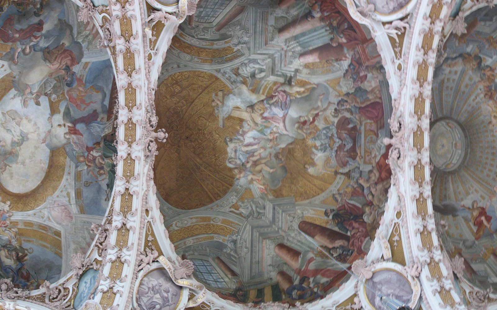
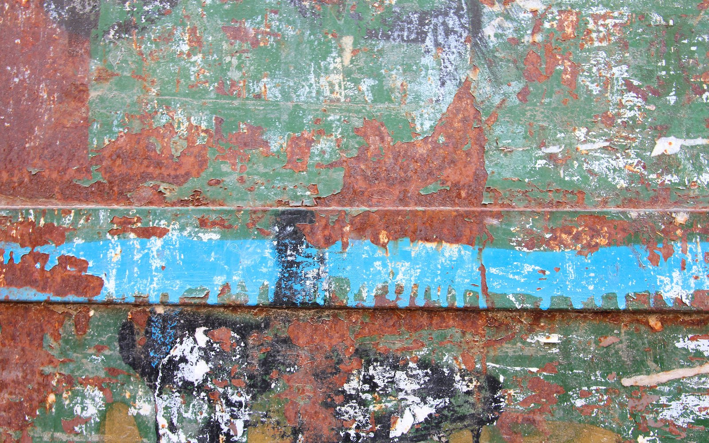

Atelier de peinture decorative au Cannet. Fresques, dorure a la feuille, trompe-l'oeil et patines, dans le respect des recettes ancestrales et des matieres naturelles.
Chaque mur raconte une histoire. Nous la prolongeons avec des pigments naturels, de la chaux et de la feuille d'or, selon des gestes transmis depuis des siecles. Un decor peint n'imite pas : il donne une ame a la matiere.
Cannes-Art est un atelier de peinture en decors specialise dans le patrimoine bati et l'art decoratif ancien. Fresques murales, plafonds, dorure a la feuille, trompe-l'oeil, faux-marbres, faux-bois, patines et enduits a la chaux : chaque projet est une piece unique, executee a la main.
Le parti pris est celui des recettes ancestrales et des materiaux naturels — chaux, pigments, colles, cires — pour des decors qui respirent et vieillissent avec noblesse, en interieur comme sur les facades.
Releve des couleurs d'origine, consolidation du support, reprise a l'identique. Glissez la poignee pour comparer.

AvantApres« Un travail d'orfevre. Notre plafond a retrouve ses dorures et ses couleurs d'epoque, le resultat est saisissant de finesse. »
« Patiente, passionnee et d'un serieux rare. Le trompe-l'oeil de notre entree transforme completement la maison. »
« Enduits a la chaux et patines realises dans les regles de l'art, avec des materiaux sains. On respire enfin un vrai savoir-faire. »
Devis gratuit et sans engagement. Parlons de votre projet, du releve a la derniere couche.